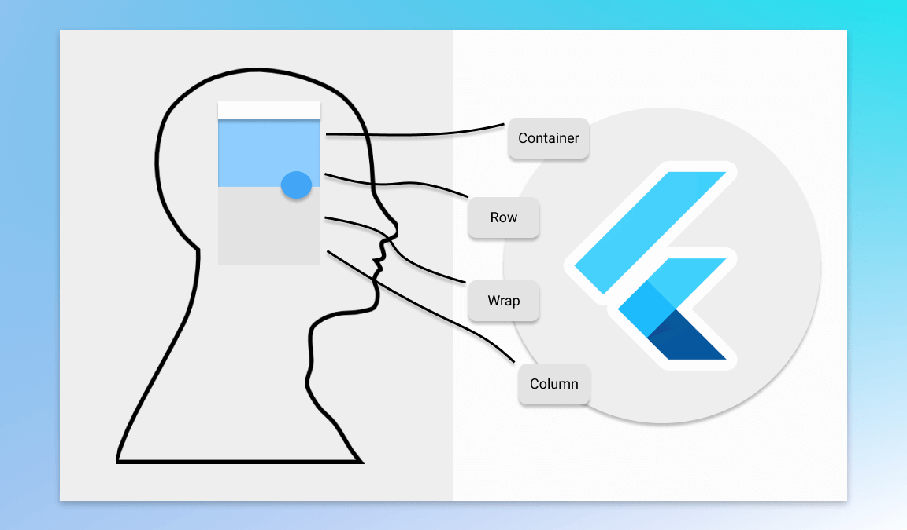

mail
Flutter实践备忘录-Widget
首页
归档
关于
首页
归档
关于
Flutter实践备忘录-Widget

引言
在Flutter的世界里，万物皆Widget，用户可见的界面，都可以有Widget组合成。官方SDK包含的Widget目前将近四百个(大致数了下，可能漏)，随着SDK迭代，这个数字会一直增加，这也就需要我们源源不断的快速学习了解新的Widget，以及掌握Widget的核心知识点，可以举一反三，触类旁通。
Widget学习
我们平时开发需要的Widget，基本熟悉常用的十几个就够用了，这十几个一定要阅读官方的 document & 点进去对应源码看看。
对于不常用的Widget，知道名字，但是用法记不住怎么办？推荐两种方式：去源码点击去看对应Example，网站搜索对应Widget名字，看示例。
对于不常用的Widget，名字都不知道，也没见过怎么办？装几个APP，打开看看有哪些神奇的控件，不用记名字，能对对应界面有印象就够了。